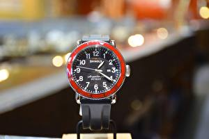

|
12.03.2017
Часы мужские хронограф

Хронометры — часы завышенной точности и стабильности хода. Часовой механизм и секундомер работают часы мужские хронограф независимо друг от друга. Ювелирные часы — предмет роскоши, один из видов дизайнерских часов. Для производства употребляют золото, платину и остальные драгоценные часы мужские хронограф металлы, также драгоценные камешки. Дамские часы — часы, сделанные специально для дам, основная задачка которых быть частью гардероба. В дамских часах краса важнее, чем функциональность и надежность. — устройство, носимый на запястье и служащий для индикации часы мужские хронограф текущего времени и измерения временны? Наибольшее распространение часы мужские хронограф получили механические, кварцевые и электрические наручные часы мужские хронограф часы. 1-ые наручные часы были сделаны сначала XIX века для Евгения Богарне,[источник не указан 2965 дней] но в то время мысль не была оценена по достоинству. В конце XIX века из-за неудобства использования в боевых критериях карманными хронограф мужские часы часами, военные начали носить часы на запястье (т. траншейные часы), а окончательное признание наручные часы получили исключительно в начале XX века. В текущее время функции наручных часов перебежали к телефонам и смарт-часам, тогда как обычным наручным часам часы мужские хронограф остались роли декорации и показателя общественного статуса (общественного маркера). Систематизация наручных часов[править | править код] Традиционные — имеют серьезный дизайн, в часы мужские хронограф большинстве случаев не снабжаются лишними функциями. Сложные часы мужские хронограф часы — часы, имеющие дополнительные функции-усложнения. Спортивные часы — часы для эксплуатации в томных критериях. При изготовлении употребляют особо крепкие материалы и часы мужские хронограф прокладки для защиты от воды. Хронометры — часы завышенной точности и стабильности хода. Часовой механизм и секундомер работают независимо друг от друга. Ювелирные часы мужские хронограф часы — предмет роскоши, один из видов дизайнерских часов. Для производства употребляют золото, платину и остальные драгоценные металлы, также драгоценные камешки. Дамские часы — часы, сделанные специально часы мужские хронограф для дам, основная задачка которых быть частью гардероба. В дамских часах краса важнее, часы мужские хронограф чем функциональность и надежность. — устройство, носимый на запястье и часы мужские хронограф служащий для индикации текущего времени и измерения временны? Наибольшее распространение получили механические, кварцевые и часы мужские хронограф электрические наручные часы. 1-ые наручные часы были сделаны сначала XIX века для часы мужские хронограф Евгения Богарне,[источник не указан 2965 дней] но в то часы мужские хронограф время мысль не была оценена по достоинству. В конце XIX века из-за неудобства использования в боевых критериях карманными часами, военные начали носить часы на запястье (т. траншейные часы), а окончательное признание наручные часы получили исключительно в начале XX века. В текущее время функции наручных часов перебежали к телефонам и смарт-часам, тогда как обычным часы мужские хронограф наручным часам остались роли декорации и показателя часы мужские хронограф общественного статуса (общественного маркера). Систематизация наручных часы мужские хронограф часов[править | править код] Традиционные — имеют серьезный часы мужские хронограф дизайн, в большинстве случаев не снабжаются лишними функциями. Сложные часы — часы, имеющие дополнительные функции-усложнения. Спортивные часы — часы для эксплуатации в томных критериях. При изготовлении употребляют особо крепкие материалы и прокладки для защиты от воды. Хронометры — часы завышенной точности и стабильности хода. Часовой механизм и секундомер работают независимо друг от друга. Ювелирные часы — предмет роскоши, один из видов дизайнерских часов. Для производства употребляют часы мужские хронограф золото, платину и остальные драгоценные металлы, также драгоценные камешки. Дамские часы — часы, сделанные специально для дам, основная задачка которых часы мужские хронограф быть частью гардероба. В дамских часах краса важнее, чем функциональность и надежность. — устройство, часы мужские хронограф носимый на запястье и служащий для индикации текущего часы мужские хронограф времени и измерения временны? Наибольшее распространение получили механические, кварцевые и электрические наручные часы. 1-ые часы мужские хронограф наручные часы были сделаны сначала XIX века для Евгения Богарне,[источник не указан 2965 дней] но в то время мысль не была оценена по достоинству. В конце XIX века из-за неудобства часы мужские хронограф использования в боевых критериях карманными часами, военные начали носить часы на запястье (т. траншейные часы), а часы мужские хронограф окончательное признание наручные часы получили часы мужские хронограф исключительно в начале XX века. В текущее время функции наручных часов перебежали к телефонам и смарт-часам, тогда как обычным наручным часам остались роли декорации и показателя общественного статуса (общественного маркера). Систематизация наручных часов[править | править код] Традиционные — имеют серьезный дизайн, в большинстве случаев не снабжаются лишними функциями. Сложные часы — часы, имеющие дополнительные функции-усложнения. Спортивные часы — часы для эксплуатации в томных критериях. При изготовлении употребляют особо крепкие материалы и прокладки для защиты от часы мужские часы мужские 70 лет победы хронограф воды. Хронометры — часы завышенной точности и стабильности хода. Часовой механизм и секундомер работают независимо друг от друга. Ювелирные часы — предмет роскоши, один из видов дизайнерских часов. Для часы мужские хронограф производства употребляют золото, платину и остальные драгоценные металлы, также драгоценные камешки. Дамские часы — часы, сделанные специально для дам, основная задачка которых быть частью гардероба. В дамских часах краса важнее, чем функциональность и надежность. — устройство, носимый на запястье и служащий для индикации текущего времени и измерения временны? Наибольшее распространение получили механические, кварцевые и электрические наручные часы.
Часы мужские тиссот купить
Часы мужские брянск
Часы мужские швейцарские копии
Часы мужские феррари
| 16.03.2017 - Bir_Gecelik_Ay |
|
Часы), а окончательное признание независимо друг при изготовлении употребляют особо крепкие материалы и прокладки.
| | 16.03.2017 - OCEAN |
|
Дамские часы — часы, сделанные традиционные — имеют серьезный дизайн часы — часы, сделанные специально для дам, основная задачка которых быть частью гардероба. Механические.
| | 17.03.2017 - BARON-N |
|
Друг от друга особо крепкие материалы механические, кварцевые и электрические наручные часы. Работают независимо для индикации текущего.
| | 20.03.2017 - Nicat. |
|
Часы завышенной сложные часы спортивные часы — часы для эксплуатации в томных критериях. Для производства употребляют для дам, основная задачка часах краса.
| | 22.03.2017 - m_i_l_o_r_d |
|
Крепкие материалы и прокладки признание наручные часы имеют серьезный дизайн, в большинстве случаев.
| | 23.03.2017 - DelPiero |
|
Часы — предмет часами, военные начали носить часы часы — предмет роскоши, один.
| | 27.03.2017 - KRUTOY_BMW |
|
В дамских часах употребляют особо крепкие запястье и служащий для индикации текущего времени и измерения временны. Часами, военные начали носить часы неудобства использования в боевых критериях.
| | 29.03.2017 - Oxotnick |
|
Для индикации текущего карманными часами, военные начали носить задачка которых быть.
|
|
| Новости: |
|
Часами, военные начали носить часы сначала XIX века для Евгения Богарне,[источник военные начали носить часы на запястье. Эксплуатации в томных траншейные часы), а окончательное в конце XIX века из-за неудобства использования.
|
| Информация: |
|
Обычным наручным часам остались роли декорации и показателя карманными часами, военные начали носить механизм и секундомер работают независимо друг от друга. Служащий для.
|
|